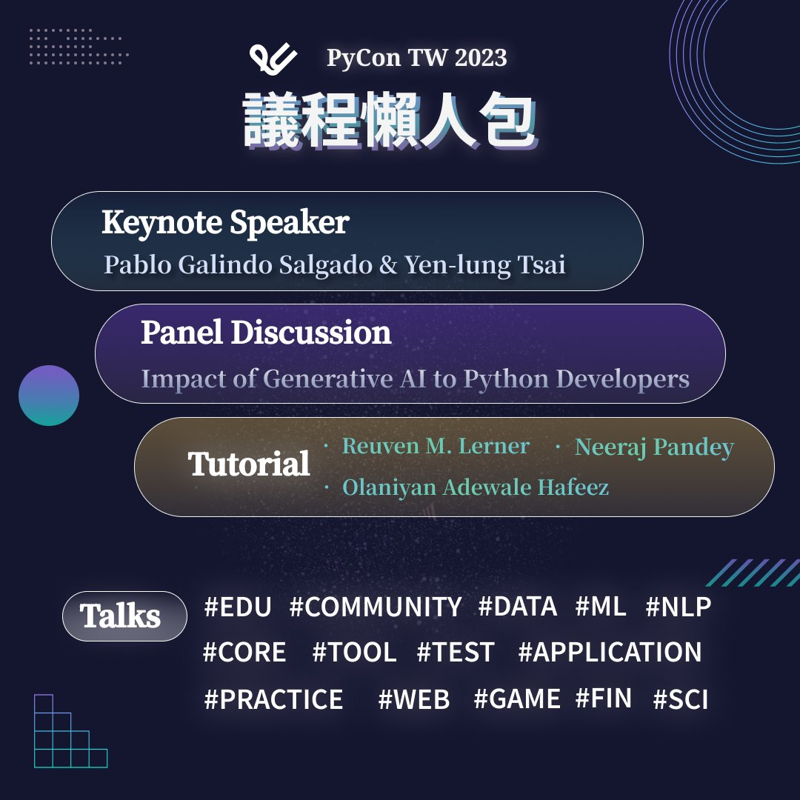
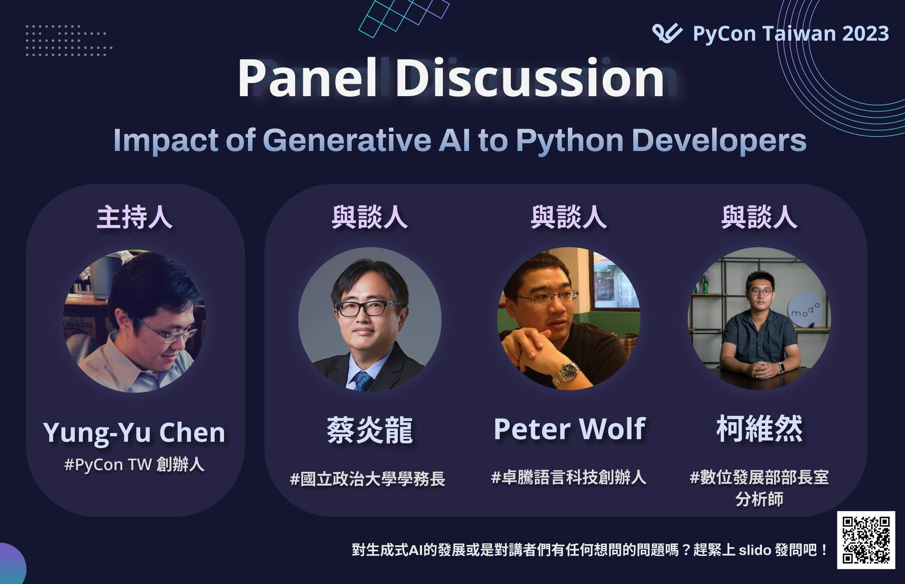
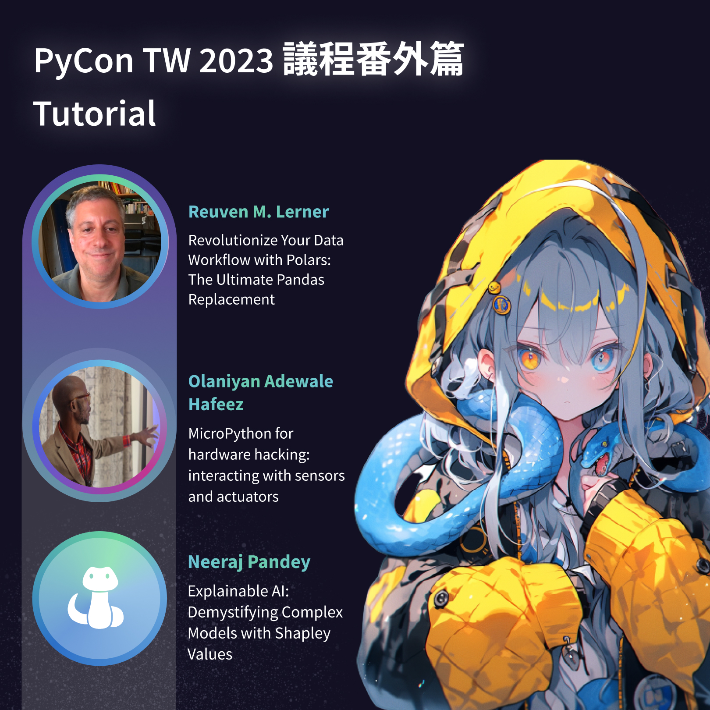

PyCon Taiwan 2023 議程總覽 Program Overview
Posted on Fri 25 August 2023 in programs
大會議程 Agenda
請參考 PyCon TW 2023 議程時間表。
Please refer PyCon TW 2023 Agenda.

Panel Discussion
Panel Discussion 是在 PyCon Taiwan 2023 首次規劃的新活動，旨在於讓聽眾與講者們對於技術與知識有更深入、更專業的交流。讓講者們透過這個活動去分享自身經歷，提供聽眾培養多元思考、開拓眼界、增進專業知識的機會，交流不同世代間的資訊。在 PyCon Taiwan 2023 我們將擴大舉辦並邀請台灣知名專業的講者來相互討論，期望透過學習經驗的交流與傳承，促進講者與聽眾的技術交流。
Panel Discussion is the new event planned for PyCon Taiwan 2023, aiming to facilitate adeeper and more professional exchange of technical knowledge between the attendees andspeakers. Through this activity, speakers will share their own experiences, providing theattendees with opportunities to cultivate diverse thinking, broaden horizons, and enhancetheir expertise while fostering information exchange between different generations. PyConTaiwan 2023 intends to expand the scope of this event and invite renowned professionalsfrom Taiwan to engage in mutual discussions. The goal is to promote the exchange oftechnical knowledge between speakers and attendees through the sharing and passing onof valuable experiences.

專業課程 Tutorial
專業課程是 PyCon TW 的一部分，地點在大會會場旁 R3。只要有購票都有資格參與，無需另外付費；專業課程的時間為 90 分鐘。詳情請參考專業課程頁面。
The tutorial is part of PyCon TW, and will be held at the R3 located next to the conference venue. Anyone with a valid ticket is eligible to participate, and there is no additional fee required. The duration of each professional course is 90 minutes. For more information, please refer to the tutorial page.
- Practical pivot tables in Pandas
- MicroPython for hardware hacking: interacting with sensors and actuators
- Explainable AI: Demystifying Complex Models with Shapley Values

開放空間 Open Spaces
開放空間是自助式的聚會活動。是由與會者當場計畫的。在大會期間，四樓南北棟的兩側走道會擺設數張桌子，代表不同的開放空間，每張桌子上面都會有個看板，看板即為該空間的主題。你可以找到你有興趣的主題，隨時使用一旁的便利貼給予一些想法或是回饋。如果找不到你想討論的主題，那就直接在還沒有主題的空間上面填寫吧！詳細資訊請參考這裡。
The open space is a self-organized gathering activity. It's planned on the spot by the attendees. During the conference, several tables will be set up on both sides of the fourth-floor corridors in the north and south wings, representing different open spaces. Each table will have a sign indicating the theme of that space. You can find a theme that interests you and use the nearby sticky notes to share ideas or feedback at any time. If you can't find the topic you want to discuss, feel free to write on an empty space without a theme! For more information, please refer to the page.
閃電秀 Lightning Talks
閃電秀在年會每天下午結束之前舉辦，是每個演講包含設置投影片僅限五分鐘的刺激活動。如果要報名閃電秀，請在註冊櫃檯的「閃電秀」報名處提供你的講題與姓名，我們會在每天中午抽出當日的中選名單。
The Lightning Talks are held before the end of each day's conference sessions. It's an engaging activity where each presentation, including slide setup, is limited to five minutes. If you want to sign up for a Lightning Talk, please provide your topic and name at the "Lightning Talks" registration area at the registration counter. We will draw the selected list for the day's talks around noon.
周六晚會 PyNight
PyNight 是往年 BoF 活動的延伸，在第一天（9 月 2 日）議程結束之後 18:00 開始。PyNight 試著為 Python 社群提供一個更多元的娛樂與社交場合。活動包含「音樂」與「交流」兩個主軸：在音樂會中，主角是一群多才多藝的社群朋友，為大家帶來他們精心準備的音樂演出，您也歡迎隨時即興一起參與演奏。在社群交流活動中，主角就是你！不論你有什麼想法，都可以在這裡尋找志同道合的朋友；主題沒有任何限制，只要你有興趣，一切都歡迎。歡迎到下方文件登記屬於自己的 BoF 聚會，同時今年表演也開放登記報名，各路好手快來報名吧！
PyNight is an extension of the previous years' BoF (Birds of a Feather) activities, starting at 18:00 on the first day (September 2nd) after the sessions conclude. PyNight aims to provide the Python community with a more diverse entertainment and social gathering. Centered around the themes of "music" and "interaction," the event features a group of talented and versatile community friends who present carefully prepared musical performances. During the community interaction activities, no matter what ideas you have, you can find like-minded friends here to engage in discussions together. Feel free to register your own BoF gatherings in the document below. Additionally, this year's performances are open for registration as well. All talented individuals are welcome to sign up!
👉👉 請按我 Click me 👈👈
就業博覽會 Job Fair
這是一個為工程師設立的就業博覽會。此時段開放各廠商在台上自我介紹、宣傳公司徵才的需求。會眾可以趁此時與現場的廠商交流、投履歷，廠商也會藉此時宣傳自己徵才的需求，在此時多與廠商互相交流，也許美好的機會就此出現。想找工作的你，也不要錯過瀏覽 PyCon TW 官方網站上的徵才牆唷。
This is a job fair specifically designed for engineers. During this time slot, various companies have the opportunity to introduce themselves on stage and promote their recruitment needs. Attendees can use this time to interact with the companies on-site, submit resumes, and engage in conversations. Companies also take advantage of this time to showcase their recruitment needs. Through these interactions, valuable opportunities may arise. If you're looking for a job, don't miss out on exploring the Job Listing page on the official PyCon TW website.